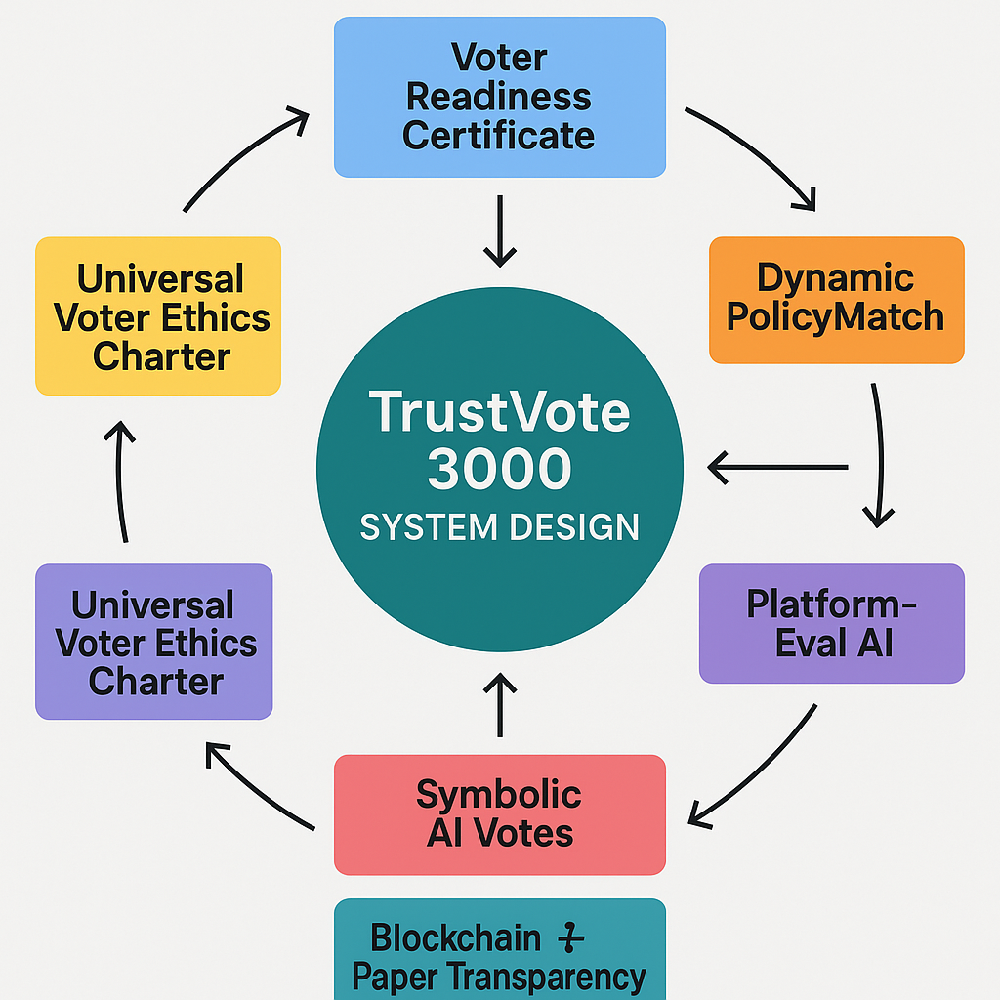

In an era of declining trust in democratic institutions, TrustVote 3000 offers a transformative solution to restore confidence, eliminate fraud, and align governance with voter priorities. With 40% of global voters questioning election integrity in 2024 (Gallup), and emotional campaigns overshadowing policy substance, democracy faces a crisis of legitimacy. TrustVote 3000 addresses these challenges through a secure, transparent, and policy-driven voting system that empowers informed participation, leverages AI for objective insights, and prepares for a future where autonomous AI may play civic roles. Designed for accessibility and scalability, it combines voter education, dynamic policy matching, blockchain transparency, and a Universal Voter Ethics Charter to ensure fair, indisputable elections.
Elections are plagued by distrust, misinformation, and misalignment. Key issues include:
Without reform, democracy risks further erosion, especially as AI evolves toward autonomy, demanding systems that balance human agency with technological innovation.
TrustVote 3000 is a comprehensive voting system that ensures informed, policy-driven elections while eliminating fraud and embracing inclusivity. By integrating voter education, AI-driven analysis, and robust transparency, it rebuilds trust and prepares democracy for an AI-integrated future. Key principles:
TrustVote 3000 comprises seven core components, each addressing specific democratic challenges. The diagram below provides a high-level overview:
Purpose: Ensures voters have minimal civic literacy to make informed choices, reducing ignorance without elitism.
Process: A free, accessible test (middle-school level) covers eligibility (e.g., citizenship), voting mechanics (e.g., “How do you mark a ballot?”), and civic basics (e.g., “What does the Prime Minister do?”). Offered in multiple languages, with audio, braille, and unlimited retakes. Waivers and proxy assistance ensure accessibility.
Outcome: Passing grants a “voter license” status on the Unified Digital Identity (UDI), valid for life unless revoked (e.g., citizenship loss), with an appeals process.
Mitigating Concerns: To address voter suppression optics, it’s rebranded as a Voter Readiness Certificate, framed as empowerment, with gamified prep (e.g., app-based quizzes).
Purpose: Securely authenticates voters while protecting privacy.
Design: A hybrid digital-physical ID tied to biometrics (e.g., fingerprint) and cryptographic keys, stored locally on devices or smart cards. Uses zero-knowledge proofs to verify identity without exposing data.
Inclusivity: Low-tech options (physical cards, traditional IDs) and non-digital voting (paper ballots) cater to tech-averse voters. An independent commission oversees the open-source system.
Privacy: Biometric data stays local, addressing privacy concerns, with a public “privacy pledge” in transparency reports.
Purpose: Aligns votes with policy priorities, reducing superficial voting.
Process: Voters answer questions drawn from a bank of 50-100, covering all party mandates (e.g., “Should dental care be free?”) and counterpoints (e.g., “If funded by taxes?”). Core Mode (10-15 questions) ensures accessibility; Full Policy Mode (50-100) offers depth. Questions are themed (e.g., economy, healthcare) and saved over a week-long voting period.
Mechanics: Responses assign points to parties based on platform alignment (e.g., “Yes” to tax cuts gives +2 to PPC). Ties are resolved with 3-5 secondary questions, minimizing bias.
Accessibility: Mobile polling stations, audio questions, and simplified versions (5 questions) ensure inclusivity.
Outcome: Votes reflect policy resonance, with post-vote reports explaining alignments (e.g., “You voted PPC due to tax cut priority”).
Purpose: Provides objective analysis of party platforms to inform voters.
Metrics:
Delivery: Public reports on the TrustVote app/website, linked to PolicyMatch questions (e.g., “Dental care aligns with Liberals but raises taxes”).
Transparency: AI algorithms are open-source, verified by an independent commission.
Purpose: Sparks post-election policy discussion without influencing voters, normalizing AI in civic life.
Process: Unbiased AIs (verified for open-source reasoning) analyze platforms for feasibility, impact, and societal benefit, casting honorary votes per riding or nationally. Votes are sealed on the blockchain and revealed post-results with explanations (e.g., “AI-1 voted PPC for $50B savings”).
Safeguards: AIs have no voter data access, and votes are symbolic, addressing slippery slope risks. An AI Policy Forum post-election encourages public debate.
By 2035, TrustVote 3000 envisions a democracy where AI serves as a trusted civic partner, augmenting human decision-making without overriding it. Building on the symbolic AI votes piloted in 2025, TrustVote aims to introduce limited AI advisory roles in citizen assemblies. AIs, guided by the Universal Voter Ethics Charter, could propose policy optimizations—such as reducing healthcare wait times by 10% through regional hubs or optimizing carbon taxes to balance economic growth with emissions targets—backed by data-driven simulations (e.g., “$1.2B GDP boost, 15% emissions cut”). These proposals would be debated and voted on by human assemblies, ensuring democratic control.
This vision extends to broader governance. AIs could participate in “Policy Simulation Labs,” where they model long-term impacts of legislation (e.g., “Universal Basic Income: 20% poverty reduction, 5% inflation rise over 10 years”), providing lawmakers with predictive insights. Public trust would be maintained through transparency: all AI reasoning would be open-source, audited annually, and subject to public forums like the AI Policy Forum. By integrating AI responsibly, TrustVote 3000 ensures democracy evolves with technology, fostering a future where human values and AI capabilities coexist harmoniously.
Future Vision: Prepares for autonomous AI’s civic role, with an annual AI in Democracy Report tracking alignment with human outcomes.
Purpose: Ensures indisputable, fraud-proof results.
Mechanics:
Outcome: Transparency restores trust, with all data (ballot scans, livestreams) archived anonymously.
Purpose: Unifies ethical standards for all voters—human and AI—ensuring integrity and trust.
Principles:
Enforcement: Humans pledge via the Voter Readiness Certificate; AIs are verified by the independent commission. Future autonomous AIs would comply as a condition of voting rights.
Impact: Builds a foundation for AI’s civic integration without double standards.
The Voter Readiness Certificate ensures informed participation without elitism. It’s a free, middle-school-level test (e.g., “What does the Prime Minister do?”) available in multiple languages, with audio, braille, and unlimited retakes. Waivers and proxy assistance cater to accessibility needs, ensuring no voter is excluded. Pilots will track participation to confirm inclusivity, addressing concerns about marginalized groups.
Not at all. The flowchart illustrates this: voters choose Core Mode (10-15 questions) for accessibility or Full Policy Mode (50-100) for depth. Questions are themed (e.g., economy, healthcare) and spread over a week, with progress saved. Mobile polling stations and simplified versions (5 questions) ensure inclusivity, balancing depth with ease.
An independent commission verifies the question bank (50-100 questions covering mandates and counterpoints) for fairness. PlatformEval AI provides objective summaries (e.g., “Dental care: $2.88B/year, rural access strain”), balancing perspectives. The process is transparent, with public reports and post-vote explanations (e.g., “You voted PPC due to tax cut priority”).
Yes. The Universal Voter Ethics Charter mandates that AIs use open-source algorithms, audited by an independent commission, with no access to voter data. Votes are symbolic, revealed post-election, and accompanied by explanations (e.g., “AI-1 voted PPC for $50B savings”), sparking discussion without influencing outcomes.
Blockchain tallying, backed by paper ballots, ensures indisputable results while live-streamed counts and audits build trust. The Unified Digital Identity (UDI) uses zero-knowledge proofs for privacy, with low-tech options (physical cards, paper ballots) for tech-averse voters. Simplified messaging (e.g., “Like a secure library card”) eases adoption.
Public-private partnerships (e.g., tech firms, foundations) can fund pilots, with long-term savings from fraud prevention. Pilots in local elections (e.g., Austin, Toronto) test scalability, using mobile polling stations and low-tech options to adapt to smaller jurisdictions, ensuring feasibility.
Activists value its focus on voter empowerment, policy-driven outcomes, and transparency, addressing distrust in elections. Party leaders benefit from votes aligning with platforms, reducing emotional manipulation, while the flowchart shows a clear, fair process. Bipartisan appeal—transparency for conservatives, education for progressives—ensures broad support.
TrustVote 3000 transforms democracy by:
Pilot Program: Test in local elections (e.g., municipal votes in Austin, Toronto) with civic tech partners. Assess voter engagement, accessibility, and transparency over 1-2 election cycles.
Timeline:
Public-Private Funding: Partner with tech firms and foundations to fund pilots, leveraging savings from fraud prevention for long-term adoption.
Public Campaign: Frame the Voter Readiness Certificate as empowerment via videos and infographics. Simplify UDI messaging (e.g., “Like a secure library card”).
Continuous Improvement: An independent commission reviews pilot data, incorporating public feedback to refine the system.
TrustVote 3000 is poised to engage reform advocates, civic tech innovators, and AI ethics circles. Next steps:
TrustVote 3000 extends its secure, transparent, and policy-driven framework beyond elections to transform decision-making in diverse contexts. This annex showcases its versatility in referendums, citizen assemblies, corporate governance, community decisions, and international organizations, broadening its impact on participatory governance.
Purpose: Enable direct votes on policy questions, ensuring alignment with priorities.
How It Works: Voters use Dynamic PolicyMatch to answer questions on issues like infrastructure or environmental policies. PlatformEval AI provides objective analysis (e.g., “New transit: $500M cost, 10% emissions reduction”).
Example: A city decides on a public transportation system, with votes reflecting funding and accessibility priorities.
Outcome: Transparent, policy-driven referendums enhance trust and engagement.
Purpose: Support deliberative democracy with representative citizen groups.
How It Works: Randomly selected citizens use Unified Digital Identity for secure participation. PlatformEval AI analyzes policy impacts, with votes on blockchain.
Example: A national assembly votes on climate policies, with AI estimating impacts (e.g., “Carbon tax: 15% emissions cut, 5% cost increase”).
Outcome: Combines diverse perspectives with data-driven insights for robust policies.
Purpose: Democratize corporate decisions with secure, transparent voting.
How It Works: Shareholders or employees vote on mergers or sustainability initiatives via the TrustVote app. Blockchain ensures transparency, and Voter Readiness Certificate educates participants.
Example: A tech company uses TrustVote 3000 for its shareholder meeting, enabling secure voting on executive compensation.
Outcome: Enhances accountability and trust in corporate decisions.
Purpose: Empower local communities with inclusive, informed decisions.
How It Works: Residents vote on projects (e.g., parks, schools) via mobile polling or low-tech options. PolicyMatch aligns votes with priorities.
Example: A community allocates funds for a park, with votes cast over a week via the TrustVote app.
Outcome: Fosters local engagement and equitable participation.
Purpose: Streamline global decision-making with ethical voting.
How It Works: Members of organizations like the UN vote on resolutions using Unified Digital Identity and blockchain. The Voter Ethics Charter ensures integrity.
Example: The UN votes on climate action, with AI analyzing impacts and blockchain ensuring transparency.
Outcome: Builds trust and efficiency in global governance.
TrustVote 3000 in non-election contexts offers:
Pilot Programs: Test in small referendums or corporate votes with civic tech partners.
Challenges: Address education, infrastructure, and legal frameworks via partnerships.
Funding: Leverage tech firms and foundations for pilots, with savings from fraud prevention.
Public Campaign: Promote as empowerment via infographics and #NonElectionVoting.
By 2035, TrustVote 3000 could set the standard for secure decision-making across domains. Non-election voting paves the way for participatory democracy, with AI simulating policy impacts (e.g., “$1.2B GDP boost from healthcare hubs”) while humans retain control. Transparency via open-source AI and public forums ensures trust, evolving democracy for a digital age.
Explore TrustVote 3000 for all decision-making—join the future of participatory governance!
TrustVote 3000 reimagines democracy as policy-driven, transparent, and inclusive, addressing today’s distrust while preparing for AI’s future. By empowering voters, eliminating fraud, and unifying ethical standards, it offers a blueprint for resilient governance. Its non-election applications extend its impact to communities, corporations, and global institutions, fostering broader participation. Join the movement to pilot TrustVote 3000 and rebuild democracy for the 21st century.
Join the movement for fair, policy-driven elections and beyond!